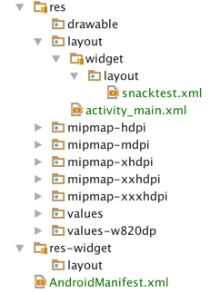
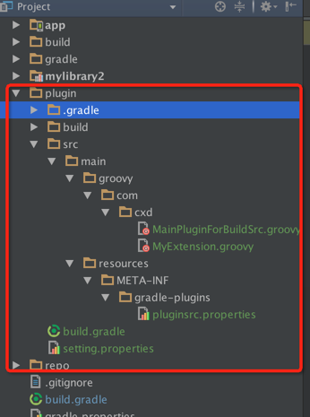
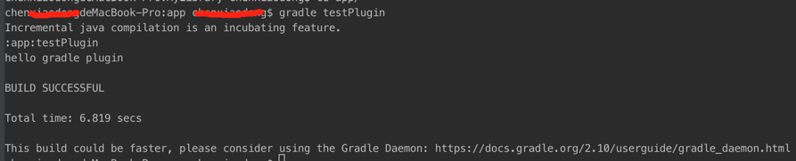

Android神兵利器笔记
[TOC]
与Gradle的爱恨情仇
使用gradle dependencies显示项目树结构
通过终端cd到需要显示依赖结构的moduel中，然后执行 gradle dependencies命令。
如何看懂gradle dependencies 输出的依赖树，里面的出现的各种符号都是什么意思？
在stackoverflow上提出了同样的问题，那边已经有人回答了:
tree - How to understand the output of command ‘gradle dependencies’?
为方便同样有这个疑问，但访问不到上面连接的朋友，这里转下答案：
+, -, | and \ are just used to draw the tree - it’s a kind of ASCII art.
When it comes to () and -> please refer to this question and answer.
tl;dr
() - is used to indicate that particular dependency is described somewhere else in the tree
-> - is used to point the dependency that wins in version conflict.
更改项目结构
|
|
比如说上面这种方式可以指定src目录，res目录，assets目录，jniLibs目录等。
还有上面这种方式指定res下的layout目录，可以给layout布局根据包名分类管理。
当然这跟android gradle版本可能也有关系，并不是所有都支持，在开发中要根据实际使用的gradle版本和as版本来定
合理利用gradle.properties文件
System.properties方式
systemProp.XXX=123456
systemProp.XXX=abcdef
然后就可以直接在build.gradle文件中引用System.properties['XXX']Key-Value方式
demo.XXX=123456
demo.XXX=abcdef
然后就可以直接在build.gradle文件中引用project.property('demo.XXX')属性方式
XXX=123456
XXX=abcdef
然后就可以直接在build.gradle文件中引用XXX
有时候我们要引用的配置需要时一个int类型，但是默认会是一个String类型，某些IDE会报错，这个时候可以试下 XXX as int
一个字符解决Gradle aar编译参数传递问题是怎样一种体验
aar是Android Studio提供的一个依赖库系统，可以很方便的让主项目来使用库项目的代码、资源。
但如何来给一个aar库传递编译参数呢（传递代码配置是很方便的，通过接口即可，但编译参数是不行的）？这个场景还是非常常见的，例如下面的这样一个项目：
这个示例来自公司对推送SDK的封装，我们都知道，第三方的推送SDK需要配置很多AppKey，这些都是在编译时就需要指定的，鄙司对第三方的推送SDK又做了一层封装，抽出了一个aar库，因此，需要在编译时将AppKey传递给aar。
爆栈上实际上已经有这个提问了，但很遗憾没有人回答，http://stackoverflow.com/questions/32955764/how-to-keep-placeholders-in-an-aars-manifest/32955888
app是我们的主项目，依赖testlibrary这样一个aar库项目（上面的目录中是以源码依赖的，但实际上我们是以aar的方式依赖）。这时候主项目依赖testlibrary的时候，需要给testlibrary传一个key，那么考虑将key写在gradle.properties中，通过manifestPlaceholders来进行引用，也就是这样：
testlibrary AndroidMainifest.xml:
testlibrary build.gradle:
其中app_key就是写在gradle.properties中的参数。
貌似这种方式就可以解决这种问题，但实际上，编译成aar后，你就会发现，在编译aar的时候，你在AndroidMainifest.xml中申明的manifestPlaceholders就已经被替换调了！而且，不管你怎么做，不替换调manifestPlaceholders的值，是肯定编译不过的。那么是不是意味着manifestPlaceholders这条路是行不通的呢？
我们先来仔细分析下问题的原因，我们在编写aar代码的时候，希望aar能够接收外界传来的编译参数，但是，在编译aar的时候，需要提供具体的值来替换这些manifestPlaceholders，否则，则编译不过，貌似整个过程就陷入了一个死循环。。。
解决办法自然是有的，比如，使用一个特殊的标志符，例如xxxxx_abc这样的标志，在主项目中，通过Task来进行Mainifest的替换，但是，这肯定不是我们想要的，因为，Gradle没有这么Low啊！！！解决的方法就是对Gradle文档进行阅读理解！！！地址如下：
我们定位到Android Manifest file merging，好好理解其中的每一句话，只到我们读到这句话：
The syntax for placeholder values is ${name} since @ is reserved for links. After the last file merging occurred, and before the resulting merged android manifest file is written out, all values with a placeholder will be swapped with injected values. A build breakage will be generated if a variable name is unknown.
有点意思吧，除了我们常用的${}的manifestPlaceholders写法，实际上，还有一种以@开头的写法！！！
OK，这种写法的含义就是，通过@开头来指定manifestPlaceholders的Key的时候，表示当前编译不执行manifestPlaceholders的替换！！！那么通过这种方式，我们就可以生成带manifestPlaceholders的aar库，从而解决我们前面提到的这个问题。
具体的解决方式如下：
testlibrary AndroidMainifest.xml:
testlibrary build.gradle:
是的，你没有看错，前面加一个@就可以了，这样你在编译aar的时候，就会保留本库中的manifestPlaceholders而不做任何替换！！！通过这样的设置，你就可以在主项目引用的时候再进行manifestPlaceholders的替换，从而实现编译参数传递。
在主项目中，配置manifestPlaceholders即可。
app build.gradle:
这里的app_key就是写在gradle.properties中的参数。
So easy，一个字符解决了所有问题。补充一下：这里的manifestPlaceholders需要放置在最终打包的渠道配置域里
使用Gradle自定义task打包安装启动apk一气呵成
|
|
直接控制台运行 ../gradlew startDemo就可以了
Gradle 性能检测
控制台使用gradle build -profile可以检测gradle执行build的性能。
会在根目录的build文件下生成reports/profile/*.html文件，该html文件列举出了gradle执行build在各个task的耗时。
gradle执行build最耗时的莫过于lint，有必要在debug的阶段禁用掉lint检查。使用方法有二：
- gradle build -x lint
-x表示exclude task ;Specify a task to be exclude from execution; - 在build.gradle配置中增加1project.gradle.startParameter.excludedTaskNames.add('lint')
这样就可以达到禁用lint，提高gradle的编译速度。
除了Lint外，AAPT检查也是一个耗时大户。在debug阶段可以通过
禁用掉。
当然，禁用掉上面这些检查可能会带来风险，会导致运行出错的问题，切记release的时候一定不要使用。
使用gradle精简资源
结合minifyEnabled true使用shrinkResources true去除工程中无效的资源。
12345release {minifyEnabled trueshrinkResources trueproguardFiles getDefaultProguardFile('proguard-android.txt'), 'proguard-rules.pro'}AS提供了快捷指令，使用快捷键’Command+Shift+A’调出快捷指令输入框，输入’remove unused resources’即可执行该指令。效果和上面类似。
Gradle自定义插件
自定义Gradle插件，可以用Android Studio，也可以用IDEA；
但是发现Android Studio貌似创建出来的gradle库工程里面的源码无法识别出来，可能是哪要设置或者as的原因，暂时不懂；
用IDEA创建gradle工程，如果发现创建工程的时候没有gradle选项，可以通过在setting>plugin里选择开启gradle重启就好了。
网上有很多教程：http://blog.csdn.net/lw_power/article/details/51241384
http://www.open-open.com/lib/view/1427034613470
暂且就用AS写写Gradle的插件吧，识别不了源文件就凑合吧。
- 目录结构

|
|
所谓Groovy脚步的Extension，实际就类似Gradle的配置信息。在主项目使用自定义的Gradle插件时，可以在主项目的build.gradle脚步中通过Extension传递一些配置参数。
上面定义了一个要配置的参数变量message
|
|
project.task('testPlugin')创建一个名为testPlugin的task。
project.extensions.create('pluginsrc', MyExtension)将一个Extension配置给名为pluginsrc的Gradle插件。注意这里的pluginsrc就是将要在主工程里apply plugin: 'pluginsrc'引用插件的名字，如果不一致，会报错
Error:(25, 0) Gradle DSL method not found: ‘pluginsrc()’
并且还需要注意的是pluginsrc.properties这个配置文件，这里的名字也必须保持和上面代码中project.extensions.create创建出来的名字一致。
否则也会出现找不到的情况。
pluginsrc.properties:
通过上面代码指定最开始创建的Groovy类。
build.gradle :
使用groovy插件编译groovy源码，声明gradleAPI作为即时编译依赖，apply plugin: ‘maven’ 是用来创建一个插件jar文件并且存储在本地maven库里，本地maven库即我们在脚本里创建的”../repo”目录
执行命令: gradle uploadArchives编译插件并上传到了本地库中
主工程的build.gradle
引用本地maven仓库自定义的插件pluginsrc–>即之前通过maven存储到本地的插件。
最后在终端执行之前创建的project.task('testPlugin')task。

打印出了我们设置进去的信息！暂告一段落……
性能检测与分析工具
统计应用的启动时间
adb shell am start -W com.netease.edu.study/.activity.ActivityWelcome